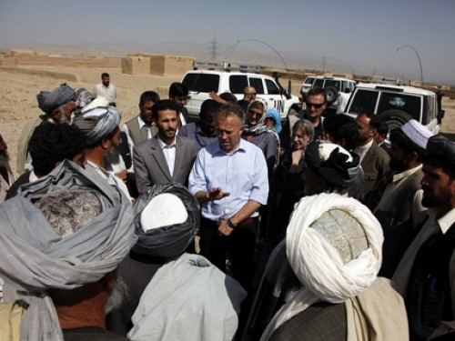

HC Interview: Afghanistan
6 Jul 2012

Humanitarian Coordinator Michael Keating meets with officials in Pul-I-Chumri to assess the scale of a drought occurring in Afghanistan's northeast. Credit: UNAMA/Fardin Waezi/2011
“Meeting the needs of ordinary Afghans is as fundamental to security as investing in security forces,” says Resident and Humanitarian Coordinator Michael Keating.
Humanitarian needs continue to rise in Afghanistan as conflict and recurrent natural disasters affect millions of Afghans and cause civilian casualties and displacement every year. So far in 2012, about 300 natural disasters have affected more than 200,000 people. The planned withdrawal of the International Security Assistance Force from Afghanistan in 2014 risks disrupting local economies, and adversely affecting humanitarian and development work.
As the international community prepares to gather in Tokyo on 8 July to pledge financial, development and security assistance for Afghanistan beyond 2014, the majority of Afghans continue to rely on outside assistance to survive. Insecurity and limited access to affected communities are preventing a sustained humanitarian response. The humanitarian appeal for the country is currently only 30 per cent funded, affecting the provision of life-saving aid.
Michael Keating, who was appointed the Resident and Humanitarian Coordinator in Afghanistan in July 2011, calls on the international community not to abandon Afghanistan again. In this interview, he talks about the impact of the military transition on aid and development, and the importance of investment in human development and the protection of civilians.
Q. How will the military transition further affect humanitarian needs and response in Afghanistan?
Broadly speaking, there are three groups of people with major humanitarian needs: those affected by sudden-onset natural disasters, chronically vulnerable people living in remote and inaccessible areas, and those affected by conflict. The transfer of military responsibility to the Afghan security forces is going to affect these groups in different ways. The greatest concern is whether security will increase or decrease and how this will affect different parts of the country. In some cases, the departure of the international military may actually improve security conditions and therefore improve our ability to access populations. But in others, things could go in the opposite direction, so we have to be ready for all eventualities.
The things that prevent humanitarian crises are jobs, security and access to basic services like health and education. All these things cost money, and if the departure of the international military is accompanied by a decrease in development resources then there is going to be less opportunities and jobs for people. The capacity of the authorities to provide services may decrease, increasing the need for response to humanitarian crises. We need to be ready but we should not be alarmist.
Q. What are you expecting from the Tokyo Conference on Afghanistan (8 July)?
We hope that the commitments that the international community has made on the security front, mainly to fund the Afghan national security forces beyond 2014, will be matched by commitments to fund economic and development activities. I think there is willingness in the international community despite the current global economic climate, but donor-country taxpayers and politicians want the Afghan Government to demonstrate a very clear and strong agenda for tackling things like corruption, strengthening the rule of law and ensuring that the elections take place. So in a way, we want two things: a clear deal between the Afghans and the international community and generous levels of funding.
Q. What is your message to world leaders who will gather in Tokyo?
Don’t abandon Afghanistan again, as happened in the early 90s, and don’t rely exclusively upon investment in security forces. Meeting the needs of ordinary Afghans is as fundamental to security as investing in security forces. The security forces and the police must be accountable to civilians and to local communities. A strong message is that not only do we need to respond to basic needs like health, education, jobs and agricultural support; we also need to address some of the greatest concerns of Afghans—lack of justice and rule of law.
Q. Do aid workers have access to affected communities?
There isn’t a single part of Afghanistan which some kind of aid worker cannot reach. For example, the Red Crescent Movement has volunteers all over the country and many NGOs are working with communities in every district. But access is not good enough. It is not sustained in all areas of the country and it is increasingly difficult for the UN to move around. So what we are doing is learning from the experience, and primarily working through communities and local authorities to deliver assistance. It is becoming tougher, but it is not impossible.
Q. How is the humanitarian community responding to the impact of natural disasters and helping Afghans prepare for future disasters?
We have been mapping all the earthquakes, floods and avalanches for the last 30 to 40 years, which has helped us understand where they are likely to take place in the future. Mapping who is where, how we need to work together and if we are able to provide effective response—whether it is the UN, the NGOs or local authorities—reveals the gap between the needs and emergency response capacity. The capacity of the local governments, who take the lead in responding, needs to be strengthened so that together we can be better prepared to respond and can move very quickly.
Q. What are some of the major areas affected due to the lack of humanitarian funding?
At the end of June, six months into the 2012 Consolidated Appeal Process (CAP), only 30 per cent of the requested amount has been received. The Emergency Response Fund is also empty. The failure to replenish the Emergency Response Fund and to increase the level of funding through the CAP is affecting the ability of NGOs and UN agencies to respond to the urgent needs of communities. For example, the health and water sectors, and the distribution of emergency items like tents, have been negatively affected by the lack of funding.
Q. Billions of dollars go towards military expenditures in Afghanistan. Is it time to invest that money into aid and development?
The money that is spent on military activities cannot just be switched to aid and development. They come from different budgets in the countries that provide this assistance. Of course, you cannot but notice the difference in levels of resources being spent on military activities and security compared to development and humanitarian response. Our argument is that we have to do everything to reduce the need for expenditure on security and military activities. That means having a peace process and reconciliation among Afghans. In the meantime, we are arguing that resources for human development and humanitarian response must be in some kind of proportion to the money that is being spent on the military, particularly after 2014.
Q. What are some of the lessons learned?
We have learned a lot of lessons over the last 10 years about how aid can be used to achieve real results for real people now. A lot of mistakes have been made and a lot of money has been wasted. Equally, some aid has made a big difference and the results speak for themselves—the increase in the number of girls in schools and the number of landmines cleared, as well as improvements in agricultural productivity and infrastructure.
According to the Ministry of Finance, US$57 billion has been dispersed in development aid between 2002 and 2010. Well, do we have $57 billion worth of results on the ground improving the lives of Afghans? Most people would say no. Then the question is: why not? And what does that mean in terms of moving forward, particularly as aid levels will come down? In some ways, a reduction of aid levels is an opportunity. We have to be much more focused on what actually delivers results and which delivery mechanism—NGOs, the UN, Government or the local community—makes the largest impact.

{kind=link}